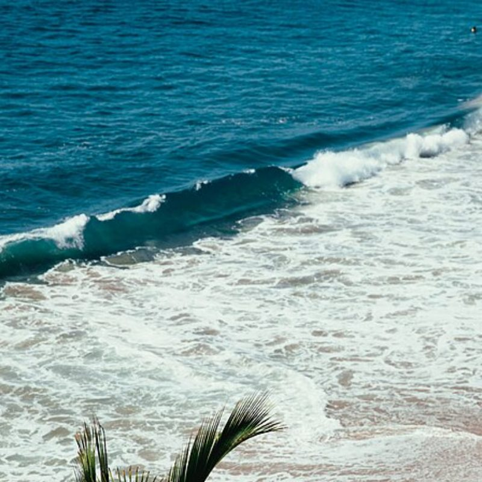
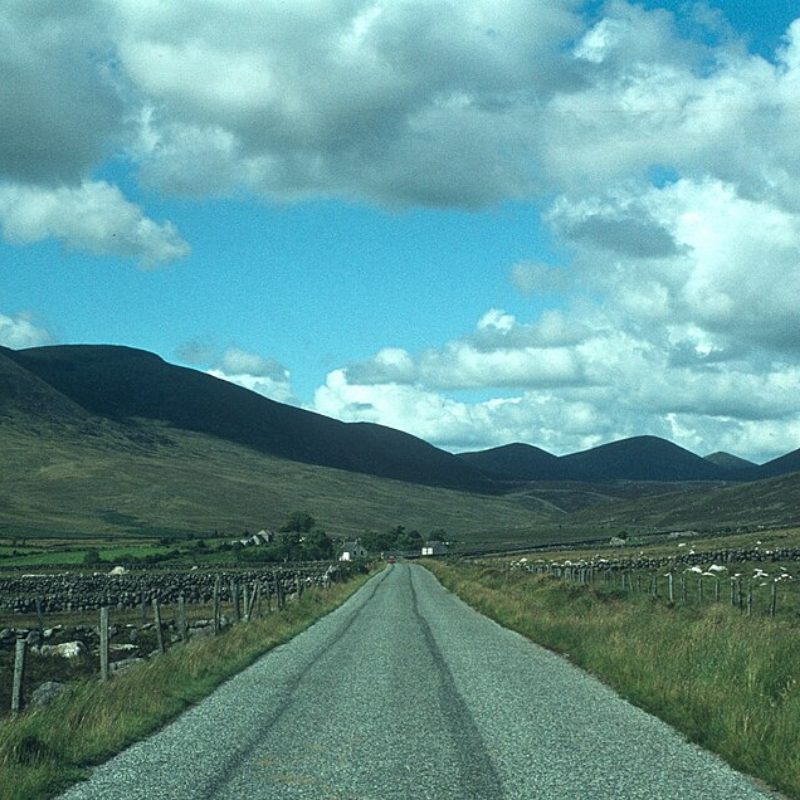

Não deixe para depois
Seu rolo de câmera está cheio de histórias.
Escolha algumas hoje. Um dia, segurar essas fotos vai significar ainda mais.
Começar agoraSuas fotos merecem o mundo real
Transforme os momentos que vivem no seu celular em polaroids feitas para tocar, presentear e guardar por muitos anos.


Não deixe para depois
Escolha algumas hoje. Um dia, segurar essas fotos vai significar ainda mais.
Começar agoraSeis formatos de polaroid, do Clássico ao Instax Wide
Legenda, data e local em fontes feitas para o papel
PDF em tamanho real para imprimir em casa ou na gráfica
Processamento 100% local. Suas fotos não sobem para nenhum servidor.